Guild trials
Fog, Rust, Haste and other trials change a town’s rules. You can see on the map in advance which ones lie ahead.
A dice game with a workshop. Five dice, up to three rolls – and every score brings more than points: it also yields materials. Out of them, you craft charms. Luck turns into a plan.
For Android, in English and German, works with TalkBack.
Ashford
No charms yet, just like at the start of the journey.
Full house
Value = base value of the combination + pips of the dice that count. Calculated by the app’s rules. In the game you then decide when to score – three scores per station.
Five dice, up to three rolls: pairs, straights, full house and five of a kind. Hold what fits and reroll the rest. The game picks the best reading of your dice by itself.
Every score has two pots: value × power = points. Three scores per station must together reach the test piece. And every score yields materials – brass, iron, crystal, moondust.
Between two towns you stop at the workshop: craft charms, regrind the faces of your dice, trade what you don’t need. Then the journey goes on.
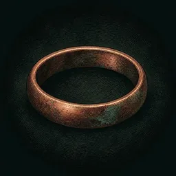
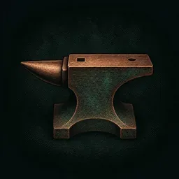
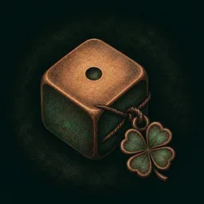
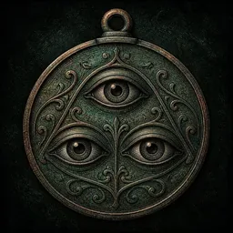
Long ago, the six finest dice makers in the land carved a single die together: the First Die. No one has seen it for generations, and in Sixwells the space between the fountains stands empty.
Whoever wants to become a master sets out on the journey: eight towns, eight test pieces – from Ashford to Sixwells. Each town was home to one of the founders. Your mentors Anselm, Wendel, Marthe and Almut send you on your way, each with their own voice, strengths and weaknesses. Every new guild rank starts a new year on the road, and the towns tell you more – until you know where the First Die belongs.
Copper engravings, a map of your journey and town ambience accompany you.
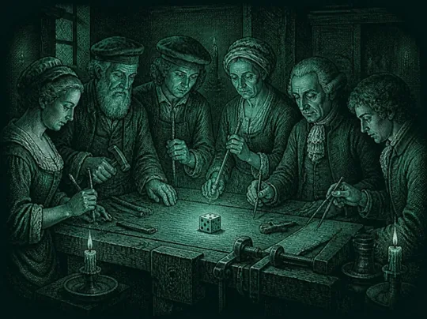
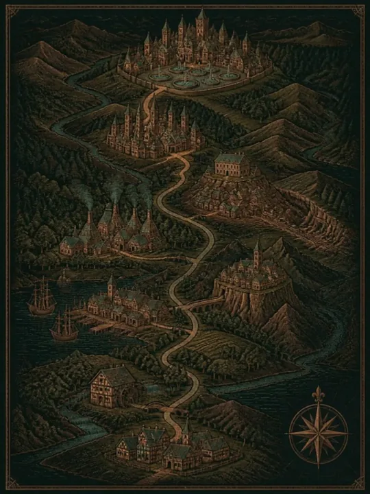
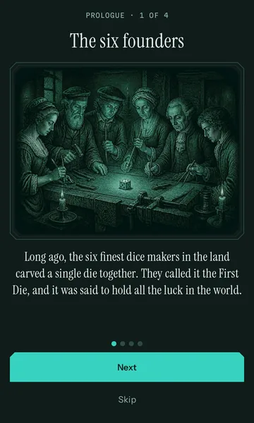
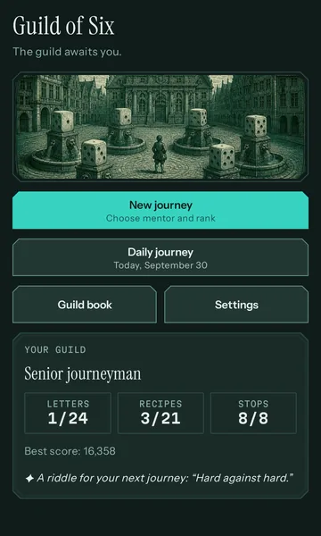
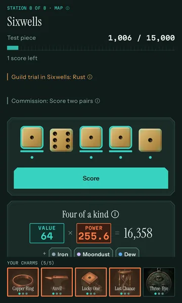
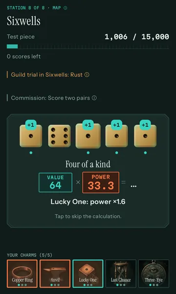
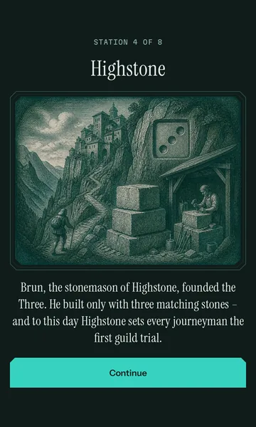
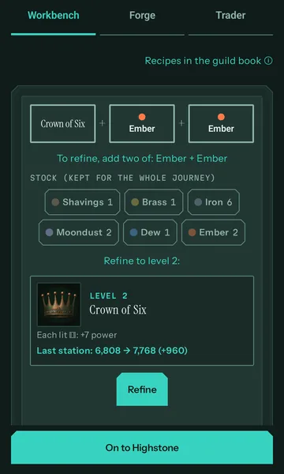
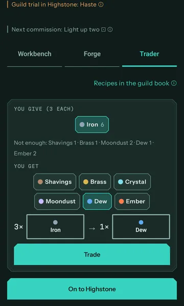
Fog, Rust, Haste and other trials change a town’s rules. You can see on the map in advance which ones lie ahead.
Anselm plays with no special rule – the measure you judge the others by. Wendel, Marthe and Almut each bring an advantage and a drawback, so the journey plays differently with each of them.
Six guild ranks from Journeyman to Master of Six, separately for each mentor: 24 master’s letters to earn.
Every page of the story you have seen can be read again in the guild book – ordered by years on the road, including the eight endings.
The same rolls for everyone, comparable on the same day. No streak to break and no reminder to pull you back.
You know the game with five dice and three rolls and want to make more of it than luck.
You like to do the maths, combine charms and crack riddles until the guild book is full.
No ads, no energy, no waiting, no in-game currency. Play as long as you like – and stop whenever you like.
No subscription, no in-game currency, no ads. The only thing that costs is a single one-time purchase.
$0
$3.79
Marthe and Almut also need the deed shown next to them – buying alone does not unlock them. Wendel is free. US price as of October 2026; in Germany €3.99. The price Google Play shows at checkout is what counts.
No. The game runs offline, including the daily journey: your device creates it from the date.
No, Guild of Six is only available for Android.
No. There is no money at stake, no loot boxes and no in-game currency. The dice bring chance into play – what you make of it is down to holding, charms and the forge.
No sign-up, no account, no ads, no trackers. Your progress stays on your device. The details are in the privacy policy (in German).
No. The Guild Charter is tied to your Google account; “Restore purchase” brings it back. Your progress comes along with Android backup or the data transfer when switching phones, if it is turned on.
English and German. It works with TalkBack.
The copper engravings were designed in Canva with AI assistance. The sounds are public-domain recordings (CC0).
Write to us at kontakt@wunderkammer-apps.de.
Eight towns, six founders, one lost die.